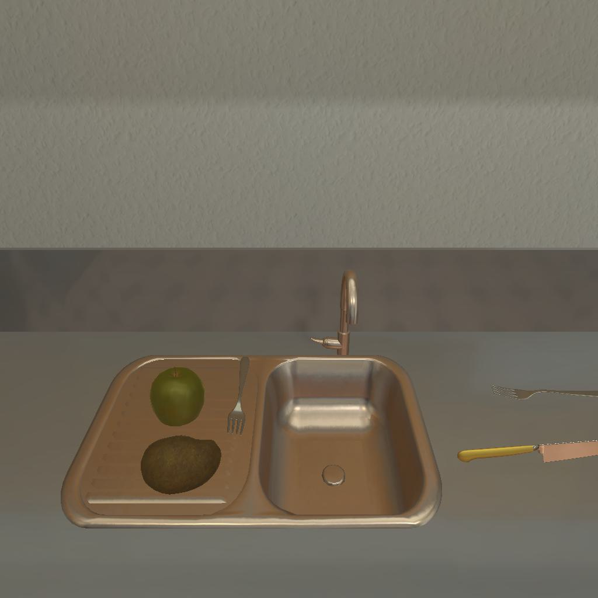

---------------------------------------------------------task: 20---------------------------------------------------------
--------------------------------------------------------------------------------------------------------------------------------------------------------------------
--------------------------------------------------------------------------------------------------------------------------------------------------------------------
Step:--------------------------------------------------------------------------1-------------------------------------------------------------------------------
----------------------------------------
VLM Prompt:
Image1:
Image2:
**Instruction**
1. Analyze the provided images to identify all visible household objects and compare the difference between images (e.h. whether the object is opened or not and taken on hand or not), focusing on those relevant to the task description "heat some apple and put it in garbagecan."
2. Use the analysis of images and the task hint "The agent must find an object of the desired type, pick it up, go to a microwave, heat the object with the microwave, then find the correct location to place it, and put it down there. The agent does not need to use the microwave button or open the microwave to heat the object, and the agent just needs to do action that is "heat the object with the microwave"." to answer the question: what is the most reasonable action in the choices for the task description "heat some apple and put it in garbagecan"?
3. Decide and write the answer using the template: The answer is: (i): , where i is the real number. If there is no desired object in images, search every place based on **Initial Observation** to find the object. And if no one is exactly correct, choose a similar answer.
**Initial Observation**
You are in the middle of a room. Looking quickly around you, you can see cabinet (1-18), countertop (1-4), sink (1), drawer (1-7), sinkbasin (1), coffeemachine (1), microwave (1), garbagecan (1), stoveburner (1-4), toaster (1), fridge (1)
**Answer Choices**
(1): go to cabinet 1
(2): go to cabinet 2
(3): go to countertop 1
(4): go to cabinet 3
(5): go to cabinet 4
(6): go to cabinet 5
(7): go to sink 1
(8): go to cabinet 6
(9): go to drawer 1
(10): go to drawer 2
(11): go to sinkbasin 1
(12): go to cabinet 7
(13): go to cabinet 8
(14): go to coffeemachine 1
(15): go to microwave 1
(16): go to cabinet 9
(17): go to countertop 2
(18): go to cabinet 10
(19): go to drawer 3
(20): go to drawer 4
(21): go to garbagecan 1
(22): go to drawer 5
(23): go to cabinet 11
(24): go to cabinet 12
(25): go to cabinet 13
(26): go to cabinet 14
(27): go to stoveburner 1
(28): go to countertop 3
(29): go to stoveburner 2
(30): go to stoveburner 3
(31): go to stoveburner 4
(32): go to drawer 6
(33): go to cabinet 15
(34): go to cabinet 16
(35): go to cabinet 17
(36): go to cabinet 18
(37): go to toaster 1
(38): go to drawer 7
(39): go to countertop 4
(40): go to fridge 1
**Answer**
Let's think step by step by following the instructions.
----------------------------------------
----------------------------------------
Original Response:
First, analyze the images provided. Both images are identical, showing a sink with a green apple and a kiwi on a tray, a fork next to the sink, and a knife with a yellow handle on the right side of the image. No object appears to be in a different state between the two images, and nothing is in hand.
Now, considering the task description "heat some apple and put it in garbagecan," we need to find an apple, heat it in the microwave, and then place it in the garbagecan. From the Initial Observation, we know there is a microwave (1) and a garbagecan (1) in the room.
Based on the task hint, we do not need to use the microwave button or open the microwave to heat the object; we just need to execute the action "heat the object with the microwave."
Given the images and the task at hand, the most reasonable action from the choices provided would be to first go to the microwave to heat the apple, and then go to the garbagecan to dispose of it. Since the apple is already visible in the images, we do not need to search every place to find it.
Therefore, the answer is: (15): go to microwave 1 to heat the apple and then (21): go to garbagecan 1 to dispose of it. However, since we can only select one action, we will choose the first necessary action, which is heating the apple.
The answer is: (15): go to microwave 1.
----------------------------------------
----------------------------------------
>>> Refine Original VLM Response and Get Pure Action: go to microwave 1
----------------------------------------
-----------------------------------------------------------------
Running time: 11.086775779724121 seconds
Total Money: 12.07669
-----------------------------------------------------------------
-----------------------------------------------------------------
Text Observation:You arrive at loc 14. The microwave 1 is closed.
-----------------------------------------------------------------
UNSUCCEED